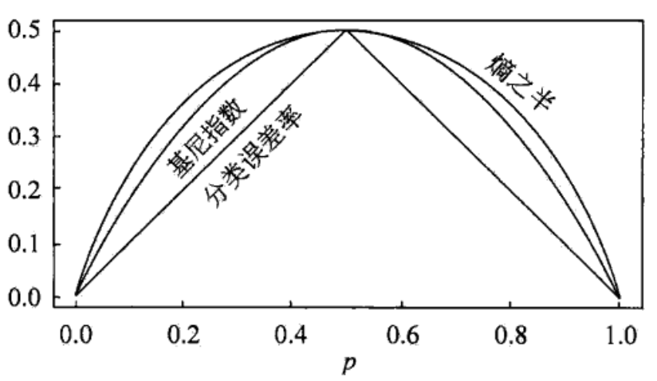
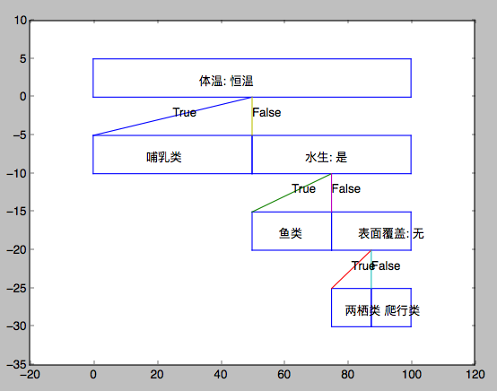
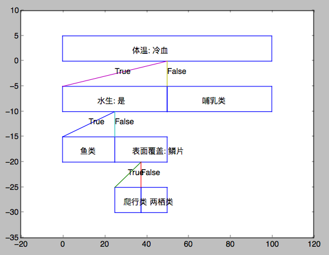
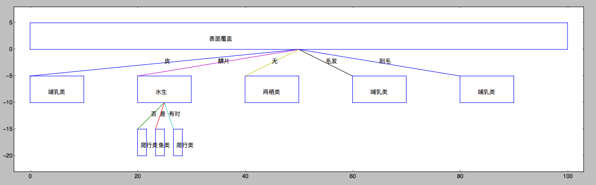

CART算法的实现
CART算法
在数据挖掘中，决策树主要有两种类型。分类树的输出是样本的类标，回归树的输出是一个实数。分类与回归树(classification and regression tree, CART)，由特征选择、树的生成以及剪枝组成，既可以用于分类也可以用于回归。对于$$D={X_{1},X_{2},…,X_{m},Y}$$，当Y是连续的数量值时，称为回归树；当Y是离散值时，称为分类树。
CART假设决策树是二叉树，内部结点特征取值为“True”或“False”，左树枝为True，右树枝为False。这样的决策树等价于递归地二分每个特征，将输入空间划分为有限个单元（或者说区域），并在单元上预测。
CART与ID3的区别：CART中选择变量的不纯性度量是Gini指数；如果目标变量是标称的，并且具备2个以上类别，可以将目标类别合并成两个超类别；如果目标变量是连续的，则CART算法找出一组基于树的回归方程来预测目标变量。
回归树
假设X与Y分别为输入和输出变量，且Y是连续变量，给定训练数据集$$D={(x_{1},y_{1}),(x_{2},y_{2}),…,(x_{N},y_{N})}$$。假设已将输入空间划分为M个单元$$R_{1},R_{2},…,R_{M}$$，并且在每个单元$$R_{m}$$上都以一个固定的输出值$$c_{m}$$，于是回归树模型可以表示为
$$f(x)=\sum_{m=1}^{M} c_{m}I(x \in R_{m})$$
当输入空间划分确定后，可以用平方误差$$\sum \limits_{x_{i} \in R_{m}} (y_{i}-f(x_{i}))^{2}$$来表示回归树对训练数据的预测误差。用平方误差最小的准则求解每个单元上的最优输出值。容易得到，单元$$R_{m}$$上的$$c_{m}$$的最优值
$$\hat{c}{m}=average(y{i}|x_{i}\in R_{m})$$
这里采用启发式的方法对输入空间进行划分，首先选择第j个变量$$x^{(j)}$$和它取的值s，作为切分变量和切分点，并定义两个区域：
$$R_{1}(j,s)={x|x^{(j)} \leq s}$$
和
$$R_2(j,s)={x|x^{(j)}>s}$$
然后寻找最优切分变量j和最优切分点s。具体地，求解
$$\min\limits_{j,s} [\min \limits_{c_{1}} \sum \limits_{x_{i} \in R_{1}(j,s)} (y_{i}-c_{1})^2 + \min \limits_{c_{2}} \sum \limits_{x_{i} \in R_{2}(j,s)} (y_{i}-c_{2})^2]$$
对固定输入变量j可以找到最优切分点s。
$$\hat{c}{1}=average(y{i}|x_{i} \in R_{1}(j,s))$$
和
$$\hat{c}{2}=average(y{i}|x_{i} \in R_{2}(j,s))$$
遍历所有的输入变量，找到最优的切分变量j，构成一个对(j,s)。依次将输入空间划分为两个区域，对每个区域重复上述过程。这样的回归树称为最小二乘回归树。
算法：
输入：训练数据集D
输出：回归树$$f(x)$$
- 选择最优切分变量j和切分点s，求解$$\min\limits_{j,s} [\min \limits_{c_{1}} \sum \limits_{x_{i} \in R_{1}(j,s)} (y_{i}-c_{1})^2 + \min \limits_{c_{2}} \sum \limits_{x_{i} \in R_{2}(j,s)} (y_{i}-c_{2})^2]$$，遍历变量j，对固定的切分变量j扫描切分点s，选择使上式达到最小值的对(j,s)
- 用选择的对(j,s)划分区域并决定相应的输出值：
$$R_{1}(j,s)={x|x^{(j)} \leq s},\ R_{2}(j,s)={x|x^{(j)} > s}$$
$$\hat{c}{m}=\frac{1}{N{m}} \sum \limits_{x_{i} \in R_{m}(j,s)} y_{i},\ x \in R_{m},\ m=1,2$$
- 递归地对2个子区域调用步骤1和2，直到满足停止条件
- 将输入空间划分为M个区域$$R_{1},R_{2},…,R_{M}$$，生成决策树
$$f(x)=\sum_{m=1}^{M} \hat{c}{m} I(x \in R{m})$$
分类树的生成
基尼指数：对于样本集合D，假设有k类，基尼指数为：
$$Gini(D)=1-\sum_{k=1}^{K}(\frac{|C_{k}|}{|D|})^2$$
$$C_{k}$$是D中第k类的样本子集，K是类的个数。
如果样本集合D根据特征A是否取某一可能值a被分割成$$D_{1}$$和$$D_{2}$$两部分，即
$$D_{1}={(x,y) \in D| A(x)=a},\ D_{2}=D-D_{1}$$
则在特征A的条件下，集合D的基尼指数定义为
$$Gini(D,A)=\frac{|D_{1}|}{|D|} Gini(D_{1}) + \frac{|D_{2}|}{|D|} Gini(D_{2})$$
下图显示了二分类问题中基尼指数、熵之半和分类误差率的关系，可以看出基尼指数、熵之半的曲线很接近，都可以近似地代表分类误差率。

下面介绍CART分类树的算法：
输入：训练数据集D
输出：CART决策树
- 根据训练数据集D，计算现有的特征对该数据集的gini系数。对于每一个特征A，取该特征的某一个值a，根据特征A的值是否为a，将D分割成$$D_{True}$$和$$D_{False}$$两个部分，并计算A=a是的分割gini系数
- 在所有可能选择的特征A和所有可能的切分点a中，选择基尼系数最小的特征及其切分点作为最优特征和最优切分点。并生成两个子结点，将$$D_{True}$$和$$D_{False}$$分配给两个子结点。
- 对子结点递归调用1和2步，直到满足停止条件
本文使用和ID3算法相似的停止条件，即D中样本全属于同一类别C或A=∅ OR D中样本在A上取值相同。除了本文的停止方式之外，还可以：(1)计算结点中的样本个数小于某个设定的阈值时，停止；(2)决策树高度达到用户设定的值时，停止；(3)当不纯度函数的变化小于某个规定的阈值，停止
我有一个感受，CART的关键点不在于gini系数，gini系数只是用来衡量训练集不纯度的一个度量手段，我们完全可以使用ID3算法中的熵不纯度替换CART中的Gini不纯度。CART的关键在于提出了一种处理连续数据的回归树方法。
CART分类树的一个例子：
| 名称 | 体温 | 表面覆盖 | 胎生 | 产蛋 | 能飞 | 水生 | 有腿 | 冬眠 | 类标记 |
|---|---|---|---|---|---|---|---|---|---|
| 人 | 恒温 | 毛发 | 是 | 否 | 否 | 否 | 是 | 否 | 哺乳类 |
| 巨蟒 | 冷血 | 鳞片 | 否 | 是 | 否 | 否 | 否 | 是 | 爬行类 |
| 鲑鱼 | 冷血 | 鳞片 | 否 | 是 | 否 | 是 | 否 | 否 | 鱼类 |
| 鲸 | 恒温 | 毛发 | 是 | 否 | 否 | 是 | 否 | 否 | 哺乳类 |
| 蛙 | 冷血 | 无 | 否 | 是 | 否 | 有时 | 是 | 是 | 两栖类 |
| 巨蜥 | 冷血 | 鳞片 | 否 | 是 | 否 | 否 | 是 | 否 | 爬行类 |
| 蝙蝠 | 恒温 | 毛发 | 是 | 否 | 是 | 否 | 是 | 否 | 哺乳类 |
| 猫 | 恒温 | 皮 | 是 | 否 | 否 | 否 | 是 | 否 | 哺乳类 |
| 豹纹鲨 | 冷血 | 鳞片 | 是 | 否 | 否 | 是 | 否 | 否 | 鱼类 |
| 海龟 | 冷血 | 鳞片 | 否 | 是 | 否 | 有时 | 是 | 否 | 爬行类 |
| 豪猪 | 恒温 | 刚毛 | 是 | 否 | 否 | 否 | 是 | 是 | 哺乳类 |
| 鳗 | 冷血 | 鳞片 | 否 | 是 | 否 | 是 | 否 | 否 | 鱼类 |
| 蝾螈 | 冷血 | 无 | 否 | 是 | 否 | 有时 | 是 | 是 | 两栖类 |
CART分类树的结果为：


同时，我们我使用之前的ID3算法对同一个训练集进行训练，产生的结果如下：

由此，我们可以发现ID3算法和CART算法的不同之处。(CART代码在本页最后提供下载)
下载完整程序： CART算法（未剪枝）源码